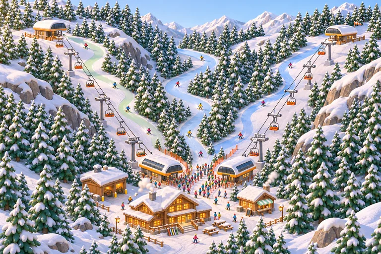
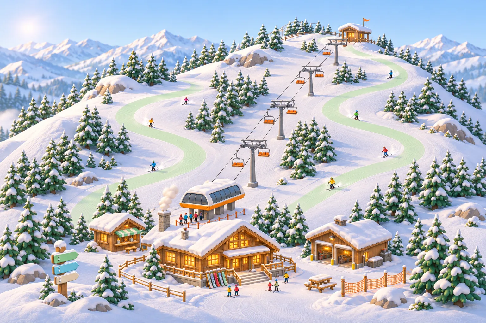
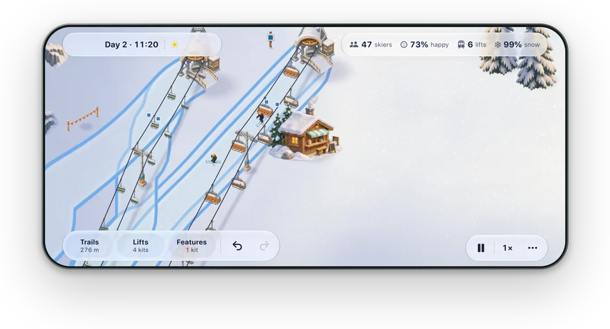
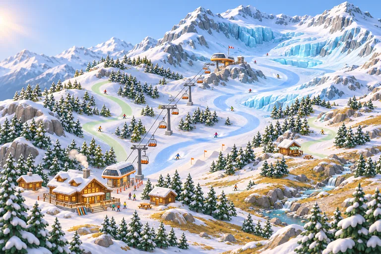

A ski-resort builder for iPhone and iPad
A little mountain. A thousand possibilities.
Draw trails and lifts, then watch tiny skiers queue, carve and chase the snow. One price. No ads. No in-app purchases.
Premium: one price, no ads, no in-app purchases. iOS 18 or later.


How it plays
Draw trails. Watch them ski.
One gesture. A living mountain. You draw the runs and the lifts; the skiers, the weather and the lift lines respond on their own.
-
One
Draw the trails
Drag one finger downhill, right on the terrain. A trail takes its difficulty from the ground it crosses, so a switchback across a steep face becomes a gentler run.
-
Two
Run the lifts
Trails carry skiers down; lifts carry them back up. Start with a surface tow, run chairlifts up the ridges and send a gondola to the high peaks.
-
Three
Watch them ski
Skiers choose runs that suit their ability, wait in real lift lines, chase fresh snow and head home when they tire. When something goes wrong, the mountain shows you where.
The terrain decides
Every run wears its difficulty.
Runs are marked the way skiers expect, by shape as well as colour, so they read at a glance and without colour vision.
- Green circleBeginner
- Blue squareIntermediate
- Black diamondAdvanced
In play
The mountain, up close.

Draw a ski resort. 
Lifts are the bottleneck. 
Small buildings, big differences. 
Weather changes everything.
The Journey
Five mountains, each with a character of its own.
Each mountain is a short scenario of four to six in-game days, with three medals to earn.
These paintings are the game's chapter art, shown when you choose a mountain. They are not captures of play. Screenshots of play are above.
-
Chapter 1 · The basics
Alpine Dawn
Open slopes above a small village. Your first trails, your first lift and your first skiers.
-
Chapter 2 · Lift lines
Pine Valley
A forested valley where the lifts meet at one busy base. Keep the lines moving.
-

Chapter 3 · Snow
Glacier Basin
An icy upper basin above a sunny low bowl. Make the snow last.
-

Chapter 4 · Wind
High Ridge
An exposed crest above sheltered runs. Plan for the days the wind closes the high lifts.
-

Chapter 5 · Everything at once
Three Peaks
Three peaks share one village. Lift lines, snow and wind, all at once.
The mountain is the interface
A small world. Real decisions.
No spreadsheets and no menus to manage. Tap a lift or a run to see why it is busy and what would help.
Skiers with minds of their own
Beginners, families and experts pick their own routes by ability, queue time and conditions.
Lifts are the bottleneck
Lift lines grow from real demand and real lift capacity. Upgrade a busy chair and watch where the crowd goes next.
A forecast to plan around
The forecast warns you before a storm, a windy day or a warm spell. Fresh powder draws the experts; wind can close exposed lifts.
Snow is finite
Sunny low slopes thin out while high bowls hold their cover. Where you build decides how long the day lasts.
One choice each morning
Before the lifts open, choose where the day's effort goes. The crews take care of the rest.
Undo, pause, speed up
Undo and redo any change, pause at any time, and speed up when the resort hums.
Six features
Six ways to shape the day.
Each one changes where skiers go, how long the snow lasts or how safely the mountain runs.
- Terrain parkDraws freestyle skiers to the runs around it.
- High-capacity liftMoves more skiers uphill. Watch the runs it feeds.
- Warming hutSomewhere for tired skiers to rest and warm up.
- Grooming stationKeeps nearby runs in shape between days.
- Patrol outpostHelps its corner of the mountain stay open when the weather turns.
- SnowmakingProtects the snow within its reach on cold days.
Three ways to play
Earn the medals, build at leisure, or take on today's peak.
-
Start here
Journey
Five mountains, each with three medals to earn. Alpine Dawn teaches the basics, Pine Valley tests your lift lines, Glacier Basin your snow, High Ridge the wind, and Three Peaks everything at once. Meet the mountains
-
Zen
Build at your own pace, with no way to fail.
-
Daily Peak
A new mountain every day, the same for every player.
Comfortable by design
Made for everyone on the mountain.
Accessibility and comfort
- Difficulty never relies on colour alone: circle, square, diamond
- Respects Reduce Motion
- Large touch targets, at least 44 points
- Adjustable game speed, and pause at any time
- Plays fully offline
- iPhone in landscape, and iPad
One price. Nothing else.
Snowline is a premium game. You pay once, and that is all.
- No ads
- No in-app purchases
- No account, and no tracking
- Your resorts are saved on your device
Your mountain is waiting.
Snowline is a ski-resort builder for iPhone and iPad. One price. No ads. No in-app purchases.